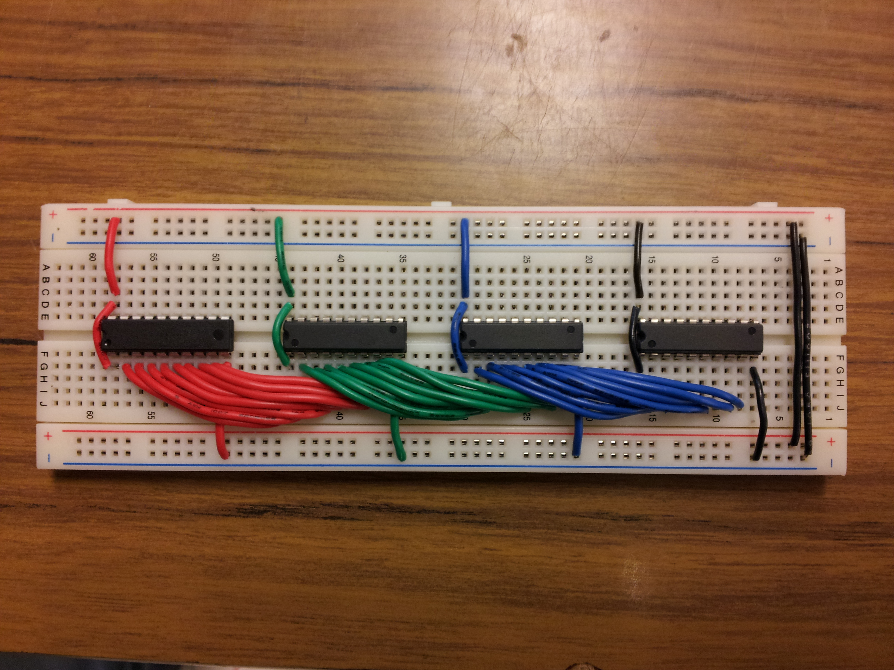

Wiring
Breadboard
1. Connect the ground and the +5V of the top and bottom of the breadboard 2. Place the 74LS245 IC on the center of the board evenly spaced out (Most left 74LS245 will be refered to IC 1 while the most right 74LS245 will be refered to IC 4)3. Connect pin 2-9 of IC 1 to the coresponding pin 2-9 of IC 2.
4. Repeat step 3 such that IC 2 will be connected to IC 3, and IC 3 with IC 4 in the same manner.
5. Connect pin 10 of all the 74LS245 to ground
6. Connect pin 1 to pin 20 for each 74LS245
7. Connect pin 20 to +5V for each 74LS245

After taping breadboard to bottom of stage
1. Thread all four wires from the bottom-most row into the corner hole and wire it accordingly.(Do one at a time to keep track of which wire is which)
2. Repeat Step 3 for the second-last row from the bottom using the same hole.
 3. Wire through the blue wires at the bottom-most row through the hole to the left of the one just used.
3. Wire through the blue wires at the bottom-most row through the hole to the left of the one just used.
4. Repeat Step 6 using the same hole for the second-last row of wires at the back.
5. Repeat 5 and 6 for the next two rows above the ones just completed.
6. Thread the red wires on the last sides through the final hole. Wire them accordingly.
7. Tape the Arduino to the bottom of the stage below the breadboard. Then attach and tape down the power cable.
8. To send a HIGH or LOW to the LS245, wire pins 2-9 on the Arduino to the pins on the LS245 in reverse order
(e.g. Pin 2 on Arduino wires to Pin 9 on LS245)
9. Wire the rest of the wires, i.e. Enablers, Ground, VCC, to the Analog pins as shown.
Arduino pin 2 will connect to pin 10 on the first 74LS245 and the following pins connect to the next pins on the IC chip until pin 9 on the Arduino is connected to pin 2 on the IC chip.
Connect analog pin A0 to the first (most left) 74LS245 enabler pin and the following analog pins will be connected to the next 3 eneablers of the 74LS245.